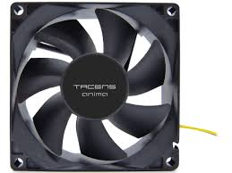
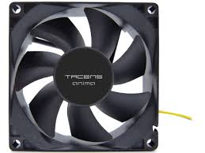

Bicos gotejadores
Bicos Gotejadores são emissores que distribuem, a velocidade da (95%), a água sob a forma de gota á gota.


Fonte de Alimentação
Uma fonte de alimentação é um dispositivo elétrico que fornece energia elétrica a uma carga elétrica.


Lâmpada
A lâmpada incandescente é um dispositivo elétrico que transforma energia elétrica em energia luminosa e energia térmica através do efeito Joule.